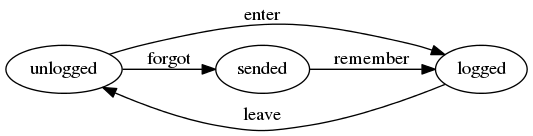

moto
Table of Contents
1 Введение
Создаем самый посещаемый ресурс по мототематике. Сначала в С-Пб, потом в Москве.
Задачи:
- Определить интересы целевой аудитории. Клубы, тусовки, небходимые сервисы
- Определить круг зарубежных ресурсов, с которых брать идеи
- Выйти на рекламодателей, определить возможную окупаемость и схемы монетизации
Отличия от других:
- Более демократичный ресурс чем мотобратан:
- модератор подписывается под баном
- можно баны обсуждать
- сообщество может отменить бан модератора!
- Больше возможностей:
- поиск людей (ник, имя, район)
- разделы общения:
- по районам - для совместных прохватов (север, юг, пригороды)
- кварталы по классу мотоциклов (спорбайки, эндуро, etc)
- новости, которые сегментирутся по кварталам.
- пользователь может подписаться на разные кварталы и сформировать ленту, а также на разных людей (иерархические теги)
- прохваты - календарь
- карта с маршрутами прохватов
- статистика дтп как на motositizen
- отметить темы как прочитанные
- личные сообщения сделать удобнее чем на мотобратане и с поиском
- Больше полезной информации о мотоциклах
- раздел с мануалами и поиском по мотоциклу
- раздел с поиском по запчастям
- раздел с "у кого спросить" по мотоциклу
- мотосервисы и отзывы о ремонтах
- Никакой надоедливой рекламы (баннеров)
- Разделы
- УСЛУГИ - в этом разделе пользователь должен увидеть, где какие гаражи можно арендовать, в каких мастерских можно починиться, где есть мотошколы, где зарегистрироваться или застраховаться и пр - то есть здесь надо собрать инфу обо всех услугах, которые могут пригодиться.
- ЗАПЧАСТИ - поиск запчастей как у частных так и по магазинам, отзывы с инфой где покупал эту запчасть https://www.louis.de/rubrik/motorradbekleidung-motorradhelme/1
- ПРОХВАТЫ
- БЛОГИ - сортировка новостей для удобства поиска (мало ли людям пригодится). Сортировать по источникам, например - СМИ (то есть газеты и проч известные сми), блоги, новости сайта.
- УГОНЫ
- ДТП
- ГАЛЕРЕЯ - как у харлея или тут http://www.dorna.com/dornacontents_wsbk.html
- Гонки
- Отчеты о путешествиях
- Брендованные страницы сервисов http://www.cobrausa.com/ https://www.louis.de/katalog/themen-welten/meine-werkstatt
- Статьи с кармой как на байкпосте
- Трансляции с мотобратана, байкпоста и других сайтов, например ручп, в части мотоциклистов
- Мотофлирт с функционалом полноценного сайта знакомств.
- Комментарии ко всему
- Продажа мотоциклов с функицоналом авто.ру и синдикацией с авто.ру и авито
- Юридическая помощь
- Отслеживание камер и радаров (за карму) (по карте)
- Карма
- отслеживать за что
- привлекать людей к оценке сколько дать за какое действие
- Связь с админами
- Система исправления орфографических (и не только) ошибок сначала для себя, а при подтверждении автором - и для других. С наглядностью диффа.
- Заметки по юзерам: http://vk.com/ekaterina.klochkova На всякий пожарный. Ближайшую неделю меня не будет вконтактике. У меня есть телефон: +79218857023 и почта: kait.klochkova@gmail.com.
- Поиск друзей с кем покататься Вводишь время, место и радиус, система находит друзей, и пишешь им - давай катать!
2 Стартап
идея. жизнь на пракачку, или как из омеги заальфаться для задротов. приложение на мобилку, которое раздает тебе очки за то что ты делаешь что-то душеспасительное и полезное. связано с форсквэром, считывалкой штрихкодов и прочей поебней.
ты логгишься туда и тебе рисуют аватарку тупого дрыща, нихуя не умеющего в этой жизни. у тебя 0 уровень.
ты получаешь очки, когда отслеживалка находит тебя в фитнес-клубах, центрах обучения и т.д. если ты там появляешься регулярно - очки удваиваются, пока не поломаешь цепь регулярности. то есть 20 посещений качалки дают 20 очков, если ходить как поппало, или 40, если не ломать периодичность 2 раза в неделю. небольшое количество баллов получаешь, когда покупаешь полезную жратву или развивающие книги, гантели. спорт товары, оплачиваешь услуги обучения, медицинские услуги и проч. для этого используется сканер штрихкодоов
растет уровень - растет необходимое количество баллов для достижения следующего. более ценные баллы можно получить, предоставляя приложению докозательства успехов - сертификаты об окончании курсов на курсере, сдача нормативов по бегу или прочей хуйне, которую отмеряет шагометр, встроенный в мобилку, чекины с других концов планеты.
задроты - они задроты везде, и зарабатывая баллы будут прокачивать свою жизнь.
идея для коммерциализации - заключать контракты с магазинами спорт товаров/ресторанами здорового питания/ центрами обучения, что бы при оплате их услуг получать бонусные баллы
Одоната по пути побочные квестики - прочитай вот эту книжку, ответь на вопросики по содержанию, получи полюсик сходи в такой музейчик, отметься - держи еще один плюсик. на этой неделе пройдет вот такое мероприятие, сходи, получи супер бонус, а мы денег за рекламу от организаторов ага. ток что бы этим заняться мне надо либо с работы уволиться либо бросить спать. я чо эт хуйню то придумала. я узнада что мой клуб очки начисляет за посещения. и обнаружила, что как только об этом узнала. частота моих посещений возрасла до 3х раз в неделю. мне эти балы не дают нихуя. не даж так. НИХУЯШЕНЬКИ но воспитанное годами мышление задрота не позволяет упустить возможность заработать баллы
3 Что улучшать
- Типы для полей state нужно задавать как перечисления
- Для всех таблиц добавить дату/время (регистрации пользователя, отправки/доставки сообщения)
4 Определения сущностей
4.1 Функции для кодогенерации сущностей
Эти функции будут кодогенерировать сущности и автоматы из таблиц с наименованием и типами полей внутри этого файла.
Начнем с генерации кода из таблицы полей:
(defun gen-fields (table) (let ((rows (nthcdr 2 table))) (princ (format "(%s\n" (butlast (first rows)))) (mapcar #'(lambda (x) (princ (format " %s\n" (butlast x)))) (butlast (cdr rows))) (princ (format " %s)" (butlast (first (last rows)))))))
Теперь напишем код, который генерирует код для состояний конечного автомата:
(defun gen-states (table) (let ((rows (nthcdr 2 table)) (hash (make-hash-table :test #'equal)) (states)) (dolist (elt rows nil) (puthash (second elt) nil hash) (puthash (third elt) nil hash)) (maphash (lambda (k v) (push k states)) hash) (princ "(") (dolist (elt (butlast states)) (princ (format ":%s " elt))) (princ (format ":%s)" (car (last states))))))
И добавим к этом генератор действий - т.е. переходов между состояниями:
(defun gen-actions (table) (let ((rows (nthcdr 2 table))) (let ((x (car rows))) (princ (format "((:%s :%s :%s)" (second x) (third x) (first x)))) (if (equal 1 (length rows)) (princ ")\n") (progn (princ "\n") (mapcar #'(lambda (x) (princ (format " (:%s :%s :%s)\n" (second x) (third x) (first x)))) (cdr (butlast rows))) (let ((x (car (last rows)))) (princ (format " (:%s :%s :%s))" (second x) (third x) (first x))))))))
Соберем все это в один файл:
<<gen_fields>> <<gen_states>> <<gen_actions>>
И загрузим его:
(load-file "generators.el")
4.2 Пользователи (user)
Для начала надо определиться, какие данные мы собираемся хранить о пользователях, и
какого типа будут эти данные. Типы данных задаем в формате Postmodern чтобы потом
сохранить данные в PostgreSQL
| field name | field type | note |
|---|---|---|
| id | serial | идентификатор |
| name | varchar | имя пользователя |
| password | varchar | пароль |
| varchar | емейл |
В нашей системе пользователь может существовать (или не существовать) в одном их нескольких состояний:
- Когда пользователь еще не зарегистрирован на сайте мы можем считать его
незарегистрированным (
unregistred) - После регистрации он автоматически становится залогиненным (
logged) - Пользователь может покинуть сайт и перейти в состояние
unlogged - Пользователь может забыть свой пароль, тогда мы должны выслать ему ссылку для
восстановления пароля (
sended) - И наконец, после восстановления пароля пользователь вновь становится залогиненным
(
logged)
Все эти переходы и состояния сведем в единую таблицу:
| action | from | to |
|---|---|---|
| registration | unregistred | logged |
| unregistration | logged | unregistred |
| enter | unlogged | logged |
| leave | logged | unlogged |
| forgot | unlogged | sended |
| remember | sended | logged |
Теперь мы можем полностью описать поведение пользователя как конечный автомат:

Сводя вместе, все что нам известно о пользователе (его поведение и поля) опишем все это в коде:
;; Автомат пользователя (define-automat user "Автомат пользователя" <<user_fields()>> <<user_states()>> <<user_actions()>>) <<user_actions_func>> <<create_user>>
Где user-fields (поля данных) определим как:
((id serial) (name varchar) (password varchar) (email varchar))
А user-states т.е. состояния пользователя определим так:
(:sended :unlogged :logged :unregistred)
И, наконец, определим user-actions переходы между состояниями:
((:unregistred :logged :registration) (:logged :unregistred :unregistration) (:unlogged :logged :enter) (:logged :unlogged :leave) (:unlogged :sended :forgot) (:sended :logged :remember))
Теперь определим функции, которые вызываются на переходах
(defun registration () "unregistred -> logged" ) (defun unregistration () "logged -> unregistred" ) (defun enter () "unlogged -> logged" ) (defun leave () "logged -> unlogged" ) (defun forgot () "unlogged -> sended" ) (defun remember () "sended -> logged" )
4.3 Сообщения (msg)
О сообщениях мы знаем только от кого они посылаются, кому и собственно текст сообщения. Его наверно не стоит ограничивать. По идее как посылающий, так и принимающий может удалить сообщение (пометить как удаленное), для этого мы используем отдельные флаги.
| field name | field type | note |
|---|---|---|
| id | serial | идентификатор |
| snd-id | integer | пользователь, который послал сообщение |
| rcv-id | integer | пользователь, который получает сообщение |
| msg | varchar | сообщение |
Еще сообщение может быть доставлено или недоставлено.
| action | from | to |
|---|---|---|
| delivery | undelivered | delivered |
Сводя вместе, все что нам известно о сообщении (его поведение и поля) опишем все это в коде:
;; Автомат сообщения (define-automat msg "Автомат сообщения" <<msg_fields()>> <<msg_states()>> <<msg_actions()>>) <<msg_actions_func>> <<create_msg>>
Где user-fields (поля данных) определим как:
((id serial) (snd-id integer) (rcv-id integer) (msg varchar))
А msg-states т.е. состояния пользователя определим так:
(:delivered :undelivered)
И, наконец, определим msg-actions переходы между состояниями:
((:undelivered :delivered :delivery))
Теперь определим функции, которые вызываются на переходах
(defun delivery () "undelivered -> delivered" )
5 События
Мы используем события, чтобы отслеживать и логгировать изменения в системе, которые происходят в ответ на действия внешних сил.
;;;; events.lisp (in-package #:moto)
6 Interface
6.1 Главная страница
(in-package #:moto) (restas:define-route main ("/") (with-wrapper "main"))
6.2 Список пользователей
(in-package #:moto) (restas:define-route allusers ("/users") (with-wrapper (tbl (loop :for i :in (all-user) :collect (tr (td (format nil "<a href=\"/user/~A\">~A</a>" (id i) (id i))) (td (name i)) (td (password i)) (td (email i)))) :border 1))) (restas:define-route allusers-ctrl ("/users" :method :post) (with-wrapper (let* ((p (alist-to-plist (hunchentoot:post-parameters*)))) "TODO")))
6.3 Страничка пользователя
(in-package #:moto) (restas:define-route user ("/user/:userid") (with-wrapper (let* ((i (parse-integer userid)) (u (get-user i))) (if (null u) "Нет такого пользователя" (format nil "~{~A~}" (list (format nil "<h1>Страница пользователя ~A</h1>" (id u)) (format nil "<h2>Данные пользователя ~A</h2>" (name u)) (tbl (list (row "Имя пользователя" (name u)) (row "Пароль" (password u)) (row "Email" (email u))) :border 1) )))))) (restas:define-route user-ctrl ("/user/:userid" :method :post) (with-wrapper (let* ((p (alist-to-plist (hunchentoot:post-parameters*)))) (cond ((getf p :addsum) ) ((getf p :follow) ) ((getf p :neworder) )))))
7 Модули
7.1 Cущности, автоматы и их тесты
Опишем из чего состоит модуль, это описание станет частью asd-файла:
(:module "entity" :serial t :pathname "mod" :components ((:file "entity")))
Собственно описание модуля вынесено в файл entity
7.2 Авторизация
Опишем из чего состоит модуль, это описание станет частью asd-файла:
(:module "auth" :serial t :pathname "mod/auth" :components ((:static-file "auth-tpl.htm") (:file "auth")))
Как пользователь, я хочу иметь возможность ввести логин и пароль чтобы получить доступ к закрытому от неавторизованных пользователей функционалу.
Собственно описание модуля вынесено в файл auth
7.3 Сообщения
Опишем из чего состоит модуль, это описание станет частью asd-файла:
(:module "msg" :serial t :pathname "mod/msg" :components ((:static-file "msg-tpl.htm") (:file "msg")))
Как пользователь, я хочу иметь возможность ввести логин и пароль чтобы получить доступ к закрытому от неавторизованных пользователей функционалу.
Собственно описание модуля вынесено в файл msg
7.4 TODO Посты
7.5 TODO Багзилла
7.6 TODO Шаринг
8 Сборка
8.1 Утилиты
;;;; util.lisp (in-package #:moto) <<get_obj_data>> <<make_clause_list>> <<err_bprint_macro>> <<dbgout>> <<alist_plist>> <<with_wrapper>> <<frm>>
;; Превращает инициализированные поля объекта в plist (defun get-obj-data (obj) (let ((class (find-class (type-of obj))) (result)) (loop :for slot :in (closer-mop:class-direct-slots class) :collect (let ((slot-name (closer-mop:slot-definition-name slot))) (when (slot-boundp obj slot-name) (setf result (append result (list (intern (symbol-name slot-name) :keyword) (funcall slot-name obj))))))) result))
;; Assembly WHERE clause (defun make-clause-list (glob-rel rel args) (append (list glob-rel) (loop :for i :in args :when (and (symbolp i) (getf args i) (not (symbolp (getf args i)))) :collect (list rel i (getf args i)))))
;; Макросы для корректного вывода ошибок (defmacro bprint (var) `(subseq (with-output-to-string (*standard-output*) (pprint ,var)) 1)) (defmacro err (var) `(error (format nil "ERR:[~A]" (bprint ,var))))
;; Отладочный вывод (defparameter *dbg-enable* t) (defparameter *dbg-indent* 1) (defun dbgout (out) (when *dbg-enable* (format t (format nil "~~%~~~AT~~A" *dbg-indent*) out))) (defmacro dbg (frmt &rest params) `(dbgout (format nil ,frmt ,@params))) ;; (macroexpand-1 '(dbg "~A~A~{~A~^,~}" "zzz" "34234" '(1 2 3 4)))
(defun anything-to-keyword (item) (intern (string-upcase (format nil "~a" item)) :keyword)) (defun alist-to-plist (alist) (if (not (equal (type-of alist) 'cons)) alist ;;else (loop :for (key . value) :in alist :nconc (list (anything-to-keyword key) value))))
Враппер управляет сесииями и выводит все в основной (root-овый) шаблон
(in-package #:moto) (defmacro with-wrapper (&body body) `(progn (hunchentoot:start-session) (let* ((*current-user* (hunchentoot:session-value 'current-user)) (retval) (output (with-output-to-string (*standard-output*) (setf retval ,@body)))) (declare (special *current-user*)) (tpl:root (list :title "title" :content (format nil "~{~A~}" (list (tpl:dbgblock (list :dbgout output)) (tpl:userblock (list :currentuser (if (null *current-user*) "none" *current-user*))) (tpl:retvalblock (list :retval retval)) (if *current-user* (tpl:msgblock (list :msgcnt (get-undelivered-msg-cnt *current-user*))) ""))))))))
Для того чтобы генерировать и выводить элементы форм, напишем хелперы:
(in-package #:moto) (defun input (type &key name value) (format nil "~%<input type=\"~A\"~A~A/>" type (if name (format nil " name=\"~A\"" name) "") (if value (format nil " value=\"~A\"" value) ""))) ;; (input "text" :name "zzz" :value 111) ;; (input "submit" :name "submit-btn" :value "send") (defun fld (name &optional (value "")) (input "text" :name name :value value)) (defun btn (name &optional (value "")) (input "button" :name name :value value)) (defun hid (name &optional (value "")) (input "hidden" :name name :value value)) (defun submit (&optional value) (if value (input "submit" :value value) (input "submit"))) (defmacro row (title &body body) `(format nil "~%<tr>~%<td>~A</td>~%<td>~A~%</td>~%</tr>" ,title ,@body)) ;; (row "thetitrle" (submit)) (defun td (dat) (format nil "~%<td>~%~A~%</td>" dat)) (defun tr (&rest dat) (format nil "~%<tr>~%~{~A~}~%</tr>" dat)) ;; (tr "wfewf") ;; (tr "wfewf" 1111) (defun frm (contents &key name (method "POST")) (format nil "~%<form method=\"~A\"~A>~{~A~}~%</form>" method (if name (format nil " name=\"~A\"" name) "") (if (consp contents) contents (list contents)))) ;; (frm "form-content" :name "nnnnn") (defun tbl (contents &key name border) (format nil "~%<table~A~A>~{~A~}~%</table>" (if name (format nil " name=\"~A\"" name) "") (if border (format nil " border=\"~A\"" border) "") (if (consp contents) contents (list contents)))) ;; (tbl (list "zzz") :name "table") ;; (frm (tbl (list (row "username" (fld "user")))))
8.2 Шаблоны
Шаблоны будем вставлять в отдельный файл src/templates.htm
// -*- mode: closure-template-html; fill-column: 140 -*- {namespace tpl} {template root} <!DOCTYPE html PUBLIC "-//W3C//DTD XHTML 1.0 Strict//EN" "http://www.w3.org/TR/xhtml1/DTD/xhtml1-strict.dtd">{\n} <html xmlns="http://www.w3.org/1999/xhtml" xml:lang="en" lang="en">{\n} <head>{\n} <title>{$headtitle}</title>{\n} <meta http-equiv="Content-Type" content="text/html; charset=utf-8" />{\n} <link rel="stylesheet" type="text/css" media="screen" href="/css/style.css" />{\n} <link rel="Shortcut Icon" type="image/x-icon" href="/img/favicon.ico" />{\n} <script type="text/javascript" src="/js/jquery-1.5.2.min.js"></script> <script type="text/javascript" src="/js/comment.js"></script> </head>{\n} <body id="top">{\n} {$content | noAutoescape}{\n} </body>{\n} </html>{\n} {/template} {template dbgblock} <div style="border: 1px solid red; background-color: #CCCCCC; padding: 2px 20px 2px 20px;"> <pre>{$dbgout | noAutoescape}</pre> </div> {/template} {template userblock} <div style="border: 1px solid red; background-color: #CCCCCC; padding: 2px 20px 2px 20px;"> <pre>Текущий пользователь: {$currentuser | noAutoescape}</pre> </div> {/template} {template retvalblock} <div style="border: 1px solid red; background-color: #FFFFFF; padding: 2px 20px 2px 20px;"> {$retval | noAutoescape} </div> {/template} {template msgblock} <div style="border: 1px solid red; background-color: #FFFFFF; padding: 2px 20px 2px 20px;"> Сообщения ({$msgcnt | noAutoescape}) </div> {/template}
8.3 Глобальные определения
;;;; entity.lisp (in-package #:moto) ;; Подключение к базе данных (defvar *db-name* "ylg_new") (defvar *db-user* "ylg") (defvar *db-pass* "6mEfBjyLrSzlE") (defvar *db-serv* "localhost") (defvar *db-spec* (list "ylg_new" "ylg" "6mEfBjyLrSzlE" "localhost")) ;; clear db (let ((tables '("user" "msg"))) (flet ((rmtbl (tblname) (when (with-connection *db-spec* (query (:select 'table_name :from 'information_schema.tables :where (:and (:= 'table_schema "public") (:= 'table_name tblname))))) (with-connection *db-spec* (query (:drop-table (intern (string-upcase tblname)))))))) (loop :for tblname :in tables :collect (rmtbl tblname))))
8.4 Каркас проекта
Для генерации "с чистого листа" необходимы функции генерации сущностей, они лежат в
файле generators.el
Чтобы их подключить - можно сделать M-x load-file generators.el в emacs-е.
Эти функции помещаются в generators.el при tangle и редактировать их можно в
соответствующем разделе этого файла. Для успешной генерации сущностей, они должны быть
загружены в emacs.
Файл prepare должен идти до файла util и остальных, так как в нем компилируются
шаблоны, от которых зависит util
Файл globals должен идти до файла entity так как в нем происходит подключение к базе
данных, которое используют тесты сущностей и автоматов.
;;;; moto.asd (asdf:defsystem #:moto :serial t :pathname "src" :depends-on (#:closer-mop #:postmodern #:anaphora #:cl-ppcre #:restas #:restas-directory-publisher #:closure-template #:cl-json #:cl-base64 #:drakma #:split-sequence) :description "site for bikers" :author "rigidus" :version "0.0.3" :license "GPLv3" :components ((:file "package") ;; файл пакетов (:static-file "templates.htm") (:file "prepare") ;; подготовка к старту (:file "util") ;; файл с утилитами (:file "globals") ;; файл с глобальными определеями ;; Модуль сущностей, автоматов и их тестов <<mod_entity>> (:file "moto") ;; стартовый файл ;; Модуль авторизации (зависит от определения сущностей в стартовом файле) <<mod_auth>> ;; Модуль сообщений <<mod_msg>> (:file "events") ;; события системы (:file "iface") ;; файл веб-интерфейса ))
8.5 Пакеты
Соберем весь код в пакет:
;;;; package.lisp (restas:define-module #:moto (:use #:cl #:closer-mop #:postmodern #:anaphora #:hunchentoot) (:shadowing-import-from #:closer-mop #:defclass #:defmethod #:standard-class #:ensure-generic-function #:defgeneric #:standard-generic-function #:class-name))
8.6 Подготовка к старту
Подготовка включает в себя загрузку всех необходимых библиотек, компиляцию шаблонов, и, возможно, инициализацию окружения.
8.7 Точка входа
;;;; moto.lisp (in-package #:moto) ;; Подключим глобальные определения <<globals>> ;; Описания автоматов и сущностей <<user_automat>> <<msg_automat>> ;; Веб-интерфейс ;; start (restas:start '#:moto :port 9997) (restas:debug-mode-on) ;; (restas:debug-mode-off) (setf hunchentoot:*catch-errors-p* t)
8.8 Веб-интерфейс
;;;; iface.lisp (in-package #:moto) ;; Враппер веб-интерфейса <<with_wrapper>> ;; Хелпер форм <<frm>> ;; Главная страница <<mainpage>> ;; Список пользователей <<alluserspage>> ;; Страничка пользователя <<userpage>>